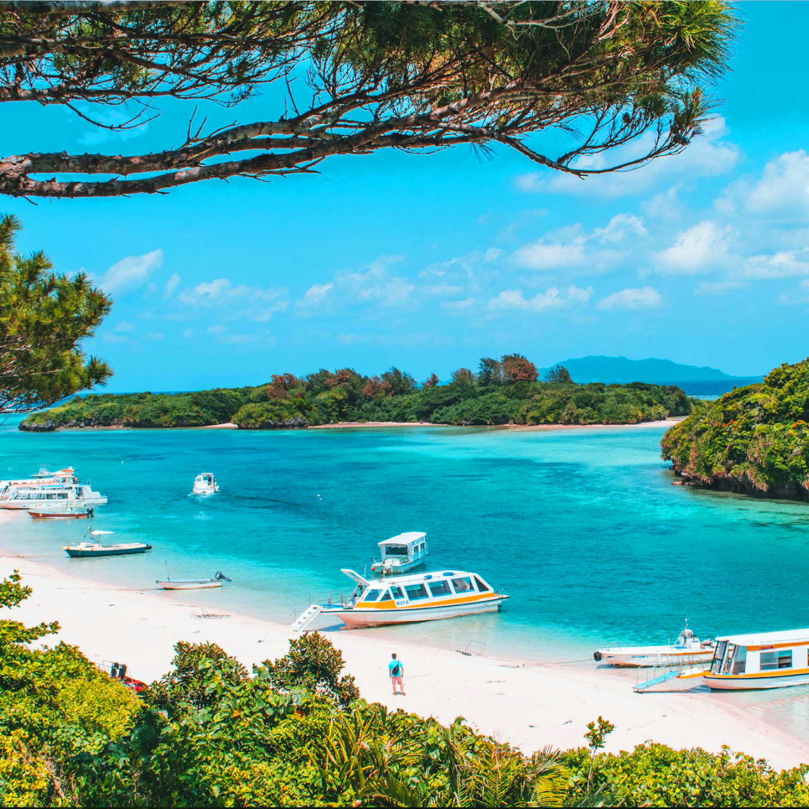

Ishigaki Island – Japan's Tropical Paradise
Ishigaki Island (石垣島) is the largest and most populous island in the Yaeyama Islands of Okinawa Prefecture. Known for its stunning white-sand beaches, vibrant coral reefs, and crystal-clear waters, Ishigaki is a tropical paradise offering a perfect escape for nature lovers, adventure seekers, and those looking for a relaxing getaway.
Pristine Beaches and Crystal-Clear Waters
Ishigaki Island is home to some of the most beautiful beaches in Japan, including Yonehara Beach, famous for its clear waters and coral reefs, and Sukuji Beach, ideal for relaxing and enjoying the sun. Whether you're into snorkeling, diving, or simply soaking up the sun, Ishigaki's beaches provide the perfect setting.
Coral Reefs and Marine Life
Ishigaki is renowned for its vibrant coral reefs and diverse marine life, making it a haven for scuba diving and snorkeling enthusiasts. Explore the underwater world at popular spots like Blue Cave and Taketomi Island, where you can swim alongside colorful fish, sea turtles, and even manta rays.
Ishigaki’s Unique Culture and Local Attractions
While Ishigaki is known for its natural beauty, it also boasts a rich cultural heritage. Visit the Ishigaki Yaima Village to experience traditional Okinawan life, or take a walk around the Ishigaki Island Monument and discover the island's history and customs. Don't forget to try local specialties like Ishigaki beef and tropical fruits.
How to Get to Ishigaki Island
- ✈️ From Naha (Okinawa): Take a 1-hour flight to Ishigaki Airport
- üö¢ From nearby islands: Ferries are available from Taketomi Island and other nearby islands
- üå∏ Best time to visit: The best time to visit Ishigaki is from March to October, when the weather is warm and ideal for outdoor activities
- üå∏ Best photo spots: Yonehara Beach, Blue Cave, and Taketomi Island
Why Ishigaki Island Is a Must-Visit for Tropical Lovers
Ishigaki Island offers a perfect combination of stunning natural landscapes, vibrant marine life, and rich cultural experiences. Whether you're snorkeling in the coral reefs, relaxing on its beautiful beaches, or exploring its unique heritage, Ishigaki is a must-visit destination for those seeking a tropical paradise in Japan.
Tags: Ishigaki Island, Okinawa beaches, tropical islands Japan, coral reefs, Ishigaki tourism, Ishigaki activities, Okinawa islands, Japanese tropical paradise
Planning to visit Ishigaki Island?
To get the most immersive and insightful experience, we recommend booking a certified local private guide from our team. All our guides are licensed professionals officially recognized by the Japanese government, offering personalized tours tailored to your interests. Please contact your selected guide in advance to confirm availability and get expert assistance for your trip.